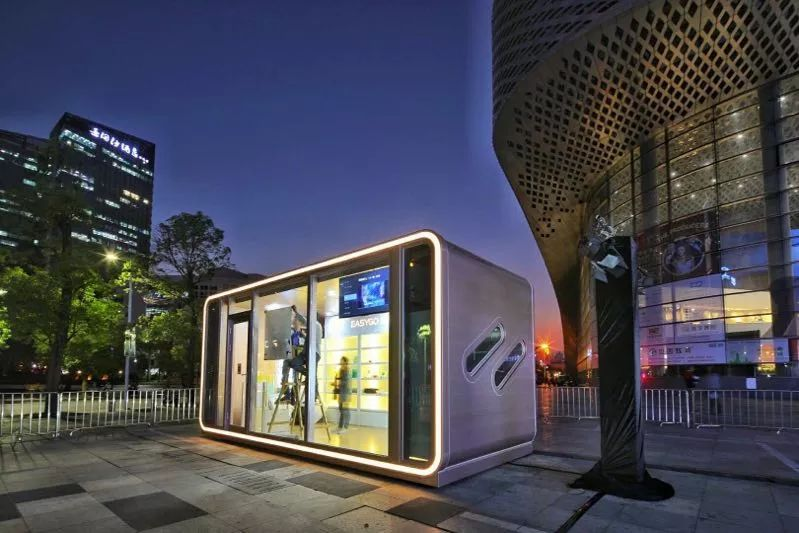

从0到100，EasyGo密集布点整合地产物业供应链
EasyGo自2017年6月第一家beta无人便利店店商业落地后，一直坚持社区定位，持续发力物业开拓与门店开业，短短半年时间内，EasyGo和时代地产、海伦堡地产、中航物业、彩生活达成战略合作，签订近千个合作楼盘，密集布点小区的近场消费场景得到多家资本的肯定和关注。

从0到100的7个月
对于EasyGo而言，2017年是从0到1，从1到100的过程。EasyGo联合创始人王牧牧坦言，物业拓展中，从0到1是最不容易的：“工程部和运营部的同事都是一个通宵一个通宵地在现场干活，就是为了把对居民的影响降到最低，让大家一觉睡醒，发现楼下多了一家无人便利店。”
“我们进入每个小区都会公示，新店开业联合物业开展营销活动。”细节工作的落实让EasyGo在地产物业圈子里赢得了口碑，也是EasyGo从1到100的基础。“现在都在安排工期进场，”王牧牧透露，广州番禺区几乎所有小区都签订了入驻协议。
除了总部广州，从广州辐射出去的二三线城市，也都有EasyGo的身影，王牧牧表示，2018年会加大在各城市门店的运营力量，将来每个城市都会配上运营团队”。
密集布点为EasyGo提供了验证商业模式依据。根据王牧牧介绍，在供应链和门店管理上，密集布点为EasyGo节省了很大成本，也让EasyGo在SKU调整的反应更加迅速，消费人群分析也更加精准。
王牧牧表示，2018年EasyGo将在全国范围内开拓市场，将密集布点的模式复制到华东、西南、华北、华中等大区。
赋能各领域零售
在进驻小区的同时，传统零售率先找上门来。碧桂园凤凰优选是最早一批与EasyGo进行技术合作的传统零售企业，使用EasyGo全套系统。
目前，珠三角的潮汕、东莞，都已有EasyGo输出技术赋能的新零售商超。而在广州，凡向书店也与EasyGo合作开业了第一家无人书店。
除了对外输出技术赋能，EasyGo还迎来众多品牌合作方。密集布点小区，构建出了近场消费场景，品牌也嗅到了商机，王牧牧介绍：“来找我们合作的品牌商非常多，日化美妆类的如欧莱雅集团、食品类的四洲集团、蒙牛等等，还包括了此前只做电商的一些品牌，像天猫果蔬脆品牌里的第一的“熊孩子”，也选择跟我们合作。”
王牧牧表示，EasyGo将移动支付技术与物联网结合，不但节省人力成本，还重建了智能供应链后台，目前已向合作商、供应链、品牌方开放，追踪商品销售、用户消费习惯，已向智慧零售的迈出了第一步。
另一方面，随着多品牌合作而来的，是对EasyGo营销整合的考验。门店数量不断增加，形成协同效应，不难想象，EasyGo的线下门店将是极大的流量入口。如何使用好门店线下流量，联合更多的品牌实现共赢，EasyGo在2018年还有很大想象发挥空间。
开拓微信线下场景
除了开店运营、赋能零售，EasyGo将小程序与微信支付作为无人便利店的使用工具，也吸引了微信的注意。
从2017年开始，EasyGo与微信就有频繁的合作，在广州举办的全球财富论坛中，微信受邀作为创新企业对外展示，其中就有EasyGo支持的无人零售场景，而在腾讯首届用户公开日上，EasyGo也是唯一一家无人零售企业。这样合作延伸到了上海，微信支付在2018年1月于上海万象城举办全国第一个无人快闪店，EasyGo为快闪店提供全套技术支持与门店运营管理。
王牧牧介绍，2018年EasyGo将在各大城市落地微信的智慧零售体验店，届时会有更多的品牌联动。
2017年腾讯频频出手与传统零售结合，可以预见腾讯在线下布局的野心。EasyGo作为近场消费的代表，本身有硬件技术和运营能力，微信支付和小程序可以全面发挥使用工具的功能，看似EasyGo的扩张，实际也是后者在线下的不断深入和加强。